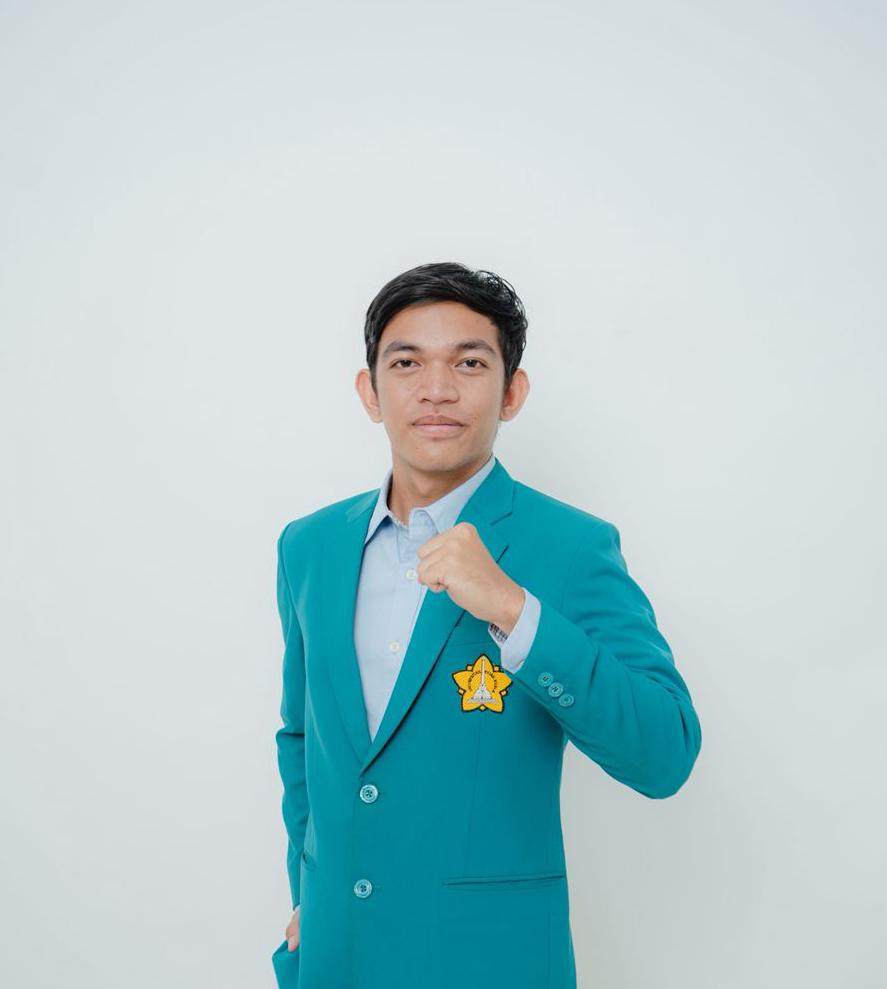

Realistis aja, milih pemimpin nggak perlu tebak-tebakan. Pilih yang nyata kerjanya, jelas prestasinya, dan didukung elemen mayoritas. Jangan titipin masa depan ke tangan yang abu-abu.

"Mewujudkan FMIPA USK yang
progresif,
kreatif, dan
inklusif
melalui sinergi mahasiswa, akademisi, dan masyarakat."
Meningkatkan partisipasi dan kepedulian mahasiswa dalam kegiatan akademik, sosial, dan kemahasiswaan.
Mendorong inovasi dan kreativitas mahasiswa melalui program pengembangan minat, bakat, dan kewirausahaan.
Membangun komunikasi dan kolaborasi yang efektif antarprodi, organisasi kemahasiswaan, dan civitas akademika.
Menyediakan wadah aspirasi mahasiswa agar suara mereka terdengar dan diperjuangkan secara transparan.
Kalau prestasi peribadi aja terbukti cemerlang, gimana ceritanya meragukan kemampuannya bawa FMIPA makin maju?
*Klik kotak prestasi untuk detail lengkap
Matematika Tingkat Kabupaten
BEM FMIPA USK
Cabang Kesehatan. Terbukti inovatif dan solutif di tingkat nasional.
BEM USK
HMIF FMIPA USK
BEM FMIPA USK
BEM FMIPA USK